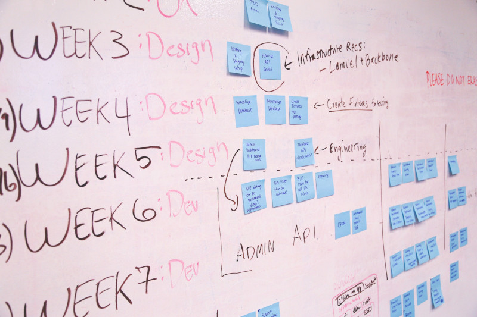

O gerenciamento eficaz de projetos sempre foi essencial para que as organizações se mantenham competitivas e relevantes para seus respectivos setores, ao mesmo tempo em que entregam resultados bem-sucedidos. As soluções de gerenciamento de projetos passaram por uma transformação notável, impulsionadas por avanços técnicos e pelas mudanças nas demandas de empresas orientadas a projetos ao longo do tempo. As ferramentas de gerenciamento de projetos mudaram fenomenalmente a forma como planejamos, executamos e monitoramos projetos hoje.

Image courtesy: Startup Stock Photos (Pexels)
Vamos mergulhar na fascinante jornada da evolução das ferramentas de gerenciamento de projetos que substituíram as técnicas convencionais de papel e caneta por soluções de software sofisticadas.
Os primeiros dias: caneta e papel para gráficos de Gantt
Nos primeiros dias, o gerenciamento de projetos dependia fortemente de métodos manuais. Os gerentes de projeto registraram meticulosamente tarefas, cronogramas e recursos usando papel e caneta. No entanto, a necessidade de agendamento e alocação de recursos mais eficientes levou à introdução de gráficos de Gantt mais eficientes. Desenvolvido por Henry Gantt no início do século XX, os gráficos de Gantt ajudaram a visualizar tarefas e itens de ação em um projeto, rastrear suas dependências e monitorar efetivamente o status das tarefas atribuídas a diferentes membros da equipe. Essa ferramenta inovadora aprimorou o planejamento e a coordenação do projeto, permitindo que as equipes visualizem e cumpram os cronogramas do projeto.
A ascensão do software de gerenciamento de projetos
Com o advento dos computadores na segunda metade do século XX, as ferramentas de gerenciamento de projetos deram um salto significativo. Surgiram soluções de software, oferecendo funcionalidades mais sofisticadas para agilizar os processos de gestão de projetos. Os primeiros softwares de gerenciamento de projetos concentravam-se na análise do caminho crítico, que ajudava a identificar a sequência de tarefas dependentes e o caminho crítico do projeto. Essas soluções de software automatizam cálculos complexos, permitindo que os gerentes de projeto otimizem a alocação de recursos e minimizem os atrasos do projeto.
Software de gerenciamento de projetos hoje
O software de gerenciamento de projetos tornou-se uma parte essencial das práticas modernas de gerenciamento de projetos. As soluções de software de hoje, como Asana, Monday.com, Trello, CatchUp, ClickUp, Basecamp e NiftyPM, oferecem uma ampla gama de recursos e funcionalidades que capacitam as equipes de projeto a colaborar, comunicar e monitorar o progresso de forma eficaz. As plataformas baseadas em nuvem ganharam popularidade, fornecendo acesso em tempo real aos dados do projeto de qualquer lugar, ao mesmo tempo em que promovem a colaboração perfeita entre os membros da equipe, independentemente de suas localizações geográficas.
O software moderno de gerenciamento de projetos vai além do rastreamento e agendamento de tarefas. Ele permite o compartilhamento de documentos, armazenamento de arquivos e controle de versão, garantindo que os membros da equipe tenham acesso às informações mais recentes do projeto. Além disso, as ferramentas mais poderosas oferecem uma interface de comunicação robusta ou integração a uma, permitindo mensagens em tempo real e videoconferência, facilitando a comunicação e colaboração eficientes da equipe.
Metodologias Ágeis e Ferramentas de Colaboração
A ascensão das metodologias ágeis influenciou significativamente a evolução das ferramentas de gerenciamento de projetos. Agile enfatiza o desenvolvimento iterativo, o planejamento adaptativo e a colaboração contínua. As ferramentas de colaboração, como quadros Kanban e aplicativos de bate-papo em equipe, tornaram-se vitais para impulsionar o gerenciamento ágil de projetos. Os quadros Kanban fornecem uma representação visual das tarefas, permitindo que as equipes acompanhem o progresso, identifiquem gargalos e promovam a transparência.
Automação e analítica de dados
A automação e a analítica de dados surgiram como recursos poderosos em ferramentas modernas de gerenciamento de projetos. Fluxos de trabalho automatizados simplificam tarefas repetitivas, reduzindo o esforço manual e os erros humanos. A integração com aplicativos e APIs de terceiros permite a troca de dados perfeita, aprimorando o ecossistema geral de gerenciamento de projetos. A analítica de dados fornece informações valiosas sobre o desempenho do projeto, permitindo que os gerentes de projeto tomem decisões baseadas em dados e otimizem as estratégias do projeto.
Aprendizado de Máquina e Inteligência Artificial
A inteligência artificial (IA) e o aprendizado de máquina (ML) estão sendo integrados às soluções de gerenciamento de projetos à medida que a tecnologia avança. Chatbots com inteligência artificial podem fornecer suporte imediato, respondendo a perguntas e orientando os membros da equipe em vários procedimentos de gerenciamento de projetos. Os algoritmos de aprendizado de máquina podem avaliar dados de projetos anteriores para identificar perigos, estimar cronogramas de conclusão de projetos e oferecer as melhores técnicas de alocação de recursos.
Desde os estágios iniciais de caneta e papel até as sofisticadas soluções de software disponíveis hoje, o objetivo das ferramentas de gerenciamento de projetos sempre foi capacitar as equipes de projeto para navegar e entregar até mesmo os projetos mais complexos sem problemas. A interseção de tecnologia e gerenciamento de projetos facilitou o aumento da eficiência, colaboração, automação e tomada de decisões orientada por dados.
À medida que a tecnologia continua a evoluir, as ferramentas de gerenciamento de projetos, sem dúvida, continuarão avançando. O futuro promete soluções mais inteligentes e intuitivas, com maior integração de IA, aprendizado de máquina e automação. As organizações podem esperar recursos preditivos aprimorados, fluxos de trabalho simplificados e colaboração aprimorada, permitindo maior sucesso por meio da execução eficiente de projetos, melhor utilização de recursos e comunicação e colaboração eficazes. Adotar essas ferramentas inovadoras e ficar a par dos avanços mais recentes será a chave para prosperar no cenário em constante mudança do gerenciamento de projetos.